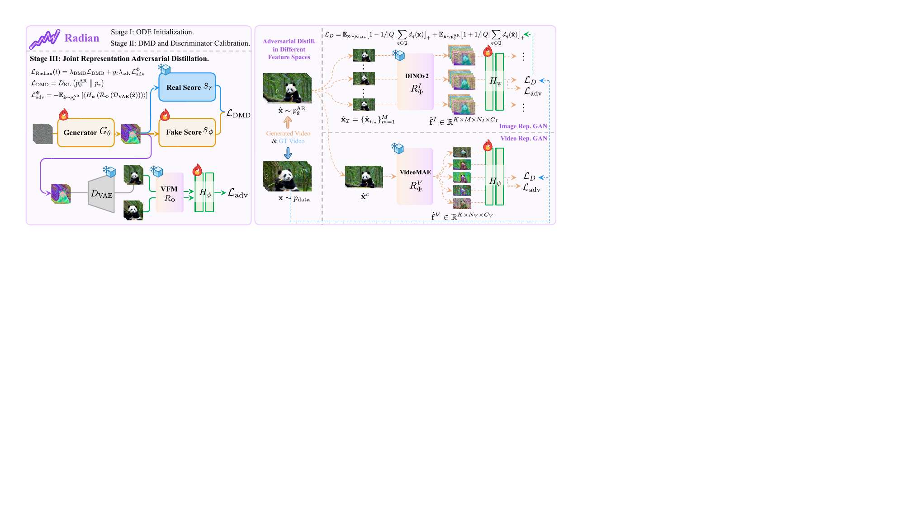

Paper Notes
Problem and Interface
自回归视频模型把早期生成结果作为后续 context；早期细节错误会在 chunk 或 frame rollout 中重复使用，表现为结构漂移、细节退化和运动不稳定。作者认为仅在 diffusion latent 内做 DMD，缺少对最终解码帧感知质量的直接约束。
输入是 prompt、噪声和历史视频 latent；student 以四步 chunk-wise 或一步 frame-wise 方式生成。训练时额外解码少量 rollout 帧，送入冻结视觉 foundation model，并由 discriminator 判断 real/generated；推理时只保留原 generator。
Paper Notes
Reading Figure 1: Complementary Supervision

Lin et al. (2026), original figure rendered from author source; arXiv license · Paper & Caption ↗
图 1 的核心是两条梯度：DMD 对 student 与 teacher 的 diffusion 分布做 on-policy 对齐；Radian 从真实视频帧和 student decoded frames 的视觉表征差异中产生 adversarial gradient。两者作用在不同接口，前者约束采样分布，后者约束最终可见的内容。
discriminator 不是部署组件，也不改变推理时的 denoising steps。作者使用一个冻结视觉 encoder 和轻量 head，避免把整个 VFM 变成 generator 的一部分；因此收益必须在训练成本与稀疏解码开销中理解。
Paper Notes
Representation-Space Adversarial Loss
φ 表示冻结视觉表征，L_adv 是 discriminator 在其特征上的 real/fake 对抗目标，L_DMD 保留原来的 distribution-matching distillation。多层特征 head 同时看 patch-level 输入与 backbone feature；作者比较 DINOv2、DINOv3、SigLIP2、V-JEPA 2.1、VideoMAE 以及混合 image+video 表征。
训练只对稀疏采样的 rollout 帧计算辅助损失，避免每一步都解码整段视频。它不是把 VFM 特征拼进 generator，而是把 frozen representation 作为训练期的评价空间；所以“语义改善”在这里是额外梯度的结果，不是推理阶段显式语义状态。
L = L_DMD + λ_adv L_adv(φ(x_real), φ(x_fake))
Paper Notes
Video Results
Lin et al. (2026), original figure rendered from author source; arXiv license · Paper & Caption ↗
主模型是 Wan2.1-1.3B，比较四步 chunk-wise、一步 frame-wise 和 long-horizon autoregressive generation。四步设置下 Radian 的 VBench Total 为 0.8444、Quality 0.8541、Semantic 0.8054，VideoAlign Total 0.8033；Self Forcing 的 VBench Total 为 0.8393，Causal Forcing 为 0.8400。
在 long-video 设定中，论文报告 Radian 的 VBench-Long 从 Rolling Forcing 的 0.7805 提升到 0.8041；这些数字依赖特定 Wan2.1-1.3B、采样预算和评测协议。图 2 的 pipeline 对应三阶段训练，图 4/5 是生成样例与长视频样例，不能从视觉样例单独推出物理正确性。
Paper Notes
What the Representation Ablations Say
DINOv2-S 是作者默认选择：表 2 的 VBench Total 为 0.8444、VideoAlign Total 为 0.8033。DINOv3 为 0.8401/0.8006，SigLIP2 为 0.8391/0.6226，V-JEPA 2.1 为 0.8360/0.5892，VideoMAE 为 0.8372/0.5888；混合 DINOv2+VideoMAE 为 0.8434/0.4485。不同表征的梯度并不等价，video representation 也不自动更好。
DINOv2 层数从 1 增至 4 时 VBench Total 从 0.8182 到 0.8444，增至 8 层反而为 0.8381。这个消融支持“表征空间是方法的一部分”，但不能证明 DINOv2 的语义本身是唯一原因，因为感知、结构和训练稳定性都可能共同影响 discriminator。
Paper Notes
Limits and Transfer
Radian 的辅助网络训练成本、解码帧选择和 discriminator 配置都很关键；论文没有证明在 text-to-video、3D-aware video 或不同 backbone 上保持同样增益。VBench 与 VideoAlign 也主要是 benchmark 指标，不是长期世界状态的一致性证明。
对 VideoGen 的直接启发是把 decoded-frame quality 作为训练期反馈，而不是只在 latent 上蒸馏。若迁移到语义几何或 LingBot-Map 类 memory，必须单独证明语义表征带来的梯度改善了几何或时序，而不能把 frozen VFM loss 本身当作结论。
Discussion
Reading Questions
What does Radian add to DMD?
它增加了 decoded-frame representation-space 的对抗监督，使 student 不只匹配 diffusion latent，还被约束到真实视频视觉表征附近。
Is this an inference-time VFM module?
不是。VFM、discriminator 和辅助 head 在训练后丢弃，推理 generator 的参数量和 denoising budget 不变。
Why compare several feature spaces?
不同 φ 会产生不同梯度；消融显示 image/video VFM 和 DiT-GAN 的结果差异很大，表征选择不能被视为实现细节。
What remains unproven for a world model?
论文主要证明生成质量指标改善，没有直接证明更好的物理状态预测、可交互记忆或 3D 一致性。
References
Original figure rendered from the authors' source archive and attributed to the paper. The figure is used for explanation; no result was redrawn.
Verified on 2026-11-23. Paper results refer to the linked versions. Repository references were checked on this date.